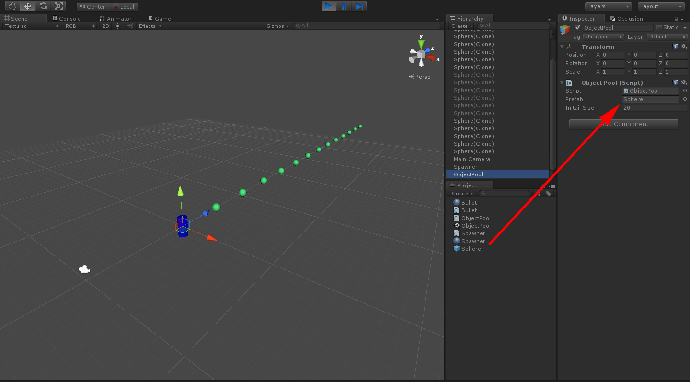
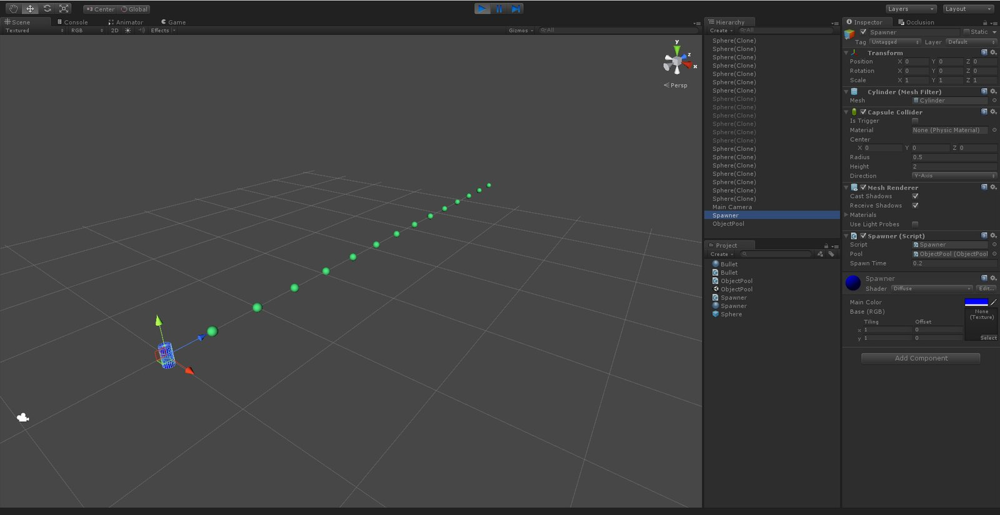

物件池是一種相當有用的方法
這個例子中用常見的子彈發射來講解
物件池的基本概念是
如果有某個物體需要經常實例化並進行銷毀
這會導致實例化的成本過高
這時候就可以透過物件池來對物體進行管理
利用預先生成的物體
一次性的實體化物件
並將物件存放在物件池中
當玩家需要使用時
則從物件池中拿出來
而用完後再放回物件池中
新增一個 ObjectPool.cs
接著在場景中新增一個空物件命名為 ObjectPool
並附加 ObjectPool.cs
using UnityEngine;
using System.Collections;
using System.Collections.Generic;
public class ObjectPool : MonoBehaviour
{
public GameObject prefab;
public int initailSize = 20;
private Queue<GameObject> m_pool = new Queue<GameObject>();
void Awake()
{
for( int cnt = 0; cnt < initailSize; cnt++ )
{
GameObject go = Instantiate( prefab ) as GameObject;
m_pool.Enqueue( go ); go.SetActive( false );
}
}
public void ReUse(Vector3 position, Quaternion rotation)
{
if(m_pool.Count > 0)
{
GameObject reuse = m_pool.Dequeue();
reuse.transform.position = position;
reuse.transform.rotation = rotation;
reuse.SetActive( true );
}
else
{
GameObject go = Instantiate( prefab ) as GameObject;
go.transform.position = position;
go.transform.rotation = rotation;
}
}
public void Recovery(GameObject recovery)
{
m_pool.Enqueue ( recovery );
recovery.SetActive ( false );
}
}Line 10
Queue 是一種資料結構
它的概念是先進先出
Queue.Enqueue()：將物件放入結構中
Queue.Dequeue()：將最先進入的物件取出
Line 12~19
這段程式中
在一開始初始化了 20 個預設物件
並將他們全部放入物件池中
Line 21~36
ReUse 是用來取出存放在物件池中的物件
簡單的判斷如果物件池中有物件則取出
如果沒有物件則重新生成
Line 39~43
Recovery 是用來回收物件
將物件重新放入物件池中
接著新增一個發射器腳本 Spawner.cs
並在場景中新增一個 Cylinder 重新命名為 Spawner 當作發射器
並附加 Spawner.cs
using UnityEngine;
using System.Collections;
public class Spawner : MonoBehaviour
{
public ObjectPool pool;
public float spawnTime = 0.2f;
private float _timer;
void Update()
{
if( Time.time > _timer + spawnTime )
{
_timer = Time.time;
pool.ReUse( transform.position, transform.rotation );
}
}
}這段只是簡單的計時器腳本
時間一到則呼叫 ReUse 方法
將子彈從物件池中取出
接著要讓發射出去的子彈可以往前發射
並且一段時間後進行回收
新增一個 Bullet.cs
using UnityEngine;
using System.Collections;
public class Bullet : MonoBehaviour
{
public float speed = 25;
public float recoveryTime = 3.0f;
private float _timer;
private Transform _myTransform;
void Awake()
{
_myTransform = transform;
}
void OnEnable()
{
_timer = Time.time;
}
void Update ()
{
if( !gameObject.activeInHierarchy )
return;
if( Time.time > _timer + recoveryTime )
{
GameObject.Find( "ObjectPool" ).GetComponent<ObjectPool>().Recovery( gameObject );
}
_myTransform.Translate ( _myTransform.forward * speed * Time.deltaTime );
}
}這裡也是使用簡單的計時器
超過時間就將子彈回收回物件池
而 transform.Translate() 可以讓物件有簡單的移動
在看看實際運行成果之前
要先將預發射的子彈儲存成 prefab 並附加 Bullet.cs

完成設置後
來看看實際運行成果
